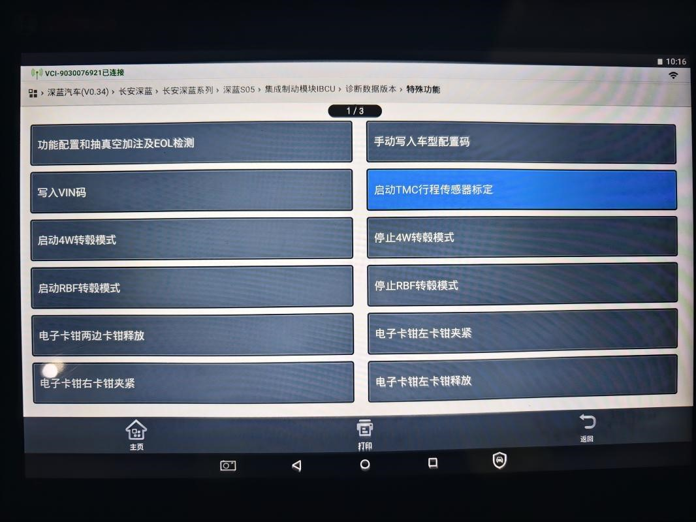

Установите автомобиль горизонтально и неподвижно, подключите диагностический прибор к разъему OBD автомобиля, включите зажигание автомобиля и запустите диагностический прибор.
Правильно подключите диагностический прибор к разъему OBD автомобиля и включите зажигание автомобиля.
Запишите код конфигурации модели автомобиля и код конфигурации колес.
Определите коды конфигурации модели автомобиля и конфигурации колес, подлежащие записи; коды конфигурации для каждой модели автомобиля указаны в таблице;
| Сокращенное наименование модели | LEV0 | LEV1 | LEV2 | LEV3 | LEV4 | LEV5 |
| Модель автомобиля | SC6440AAAABEV | SC6440AAAABEV | SC6440AAAABEV,SC6440AAABBEV | SC6440AAAABEV,SC6440AAABBEV | SC6440AAABBEV | SC6440AAABBEV |
| Номер статуса | CNH0001 | CNH1001,CNH1002 | CNH2001,CNH2002,CNH2003,CNH2004,CNH2501,CNH2502 | CNH3001,CNH3002,CNH3003,CNH3502,CNH3501 | CNH4001,CNH4002,CNH4003,CNH4004 | CNH5001,CNH5002,CNH5003 |
| Вариант модели автомобиля | 01 | 01 | 02 | 03 | 04 | 05 |
Путь для записи кода конфигурации модели автомобиля: Диагностический прибор > Диагностика автомобиля > Интегрированный модуль управления тормозной системой IBCU > Версия диагностических данных > Специальные функции > Ручная запись кода конфигурации модели автомобиля; код конфигурации необходимо записывать полностью, например, при вводе «01» вводить 01, а не просто 1. Путь показан на рисунке. Путь для записи типа колес: Диагностический прибор > Диагностика автомобиля > Интегрированный модуль управления тормозной системой IBCU > Версия диагностических данных > Специальные функции > Конфигурация функций > Тип передних/задних колес
После правильной и успешной записи кода конфигурации модели автомобиля и кода конфигурации колес пошагово возвращайтесь по интерфейсу назад до экрана выбора «Электронный стояночный тормоз в сборе EPBi», подождите около 10s, пока на комбинации приборов перестанет выводиться сообщение о неисправности стояночной системы.
Припаркуйте автомобиль на горизонтальной поверхности земли, убедитесь, что педаль тормоза не нажата
Калибровка датчика хода TMC, путь калибровки: Диагностический прибор > Диагностика автомобиля > Интегрированный модуль управления тормозной системой IBCU > Специальные функции > Запуск калибровки датчика хода TMC, нажать «Запустить процедуру», отобразится сообщение об успешном выполнении калибровки датчика хода TMC, как показано на рисунке ниже
Убедитесь в отсутствии кодов неисправностей и отображения контрольных ламп неисправностей.
Проверьте наличие оставшихся кодов неисправностей; при их наличии удалите текущие коды неисправностей, обновите и проверьте снова.
Проверьте, отображаются ли на панели приборов контрольные лампы неисправностей, связанные с системой IBCU.
Примечание:
1. Если производилась замена компонентов сборки исполнительного механизма IBCU, и заменяемая сборка исполнительного механизма IBCU является сухой деталью, необходимо выполнить заправку жидкостью и прокачку; для влажной детали этот шаг не требуется.
2. Во время калибровки параметры 4 углов установки колес автомобиля должны быть правильными, а автомобиль должен стоять на горизонтальной поверхности земли.
3. Используя портативный диагностический прибор, строго выполняйте калибровку в соответствии с инструкциями на диагностическом приборе.